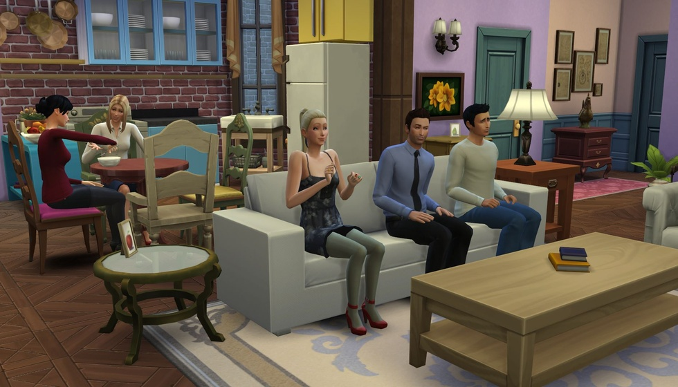

误买'假模拟人生'玩了整个童年？这款台湾游戏当年骗

有没有过对着游戏碟封面犯迷糊的经历？明明想买款热门模拟游戏，回家装完却发现玩法完全不对，结果反倒被这“错买的游戏”勾住，一玩就是好几年？2000年初的电脑城，信息不通的玩家全靠封面选游戏，不少人冲着《模拟人生》的名气下手，拿到的却是另一款名字相近的作品，这段“美丽的误会”，成了很多人童年里特别的游戏记忆。正因为两款游戏名字太像，不光普通玩家分不清，连中文维基百科都特意标注，能看出当年混淆得多厉害，你是不是也有过拿着碟片回家，才发现买错了的经历？
《模拟人生》主打居家日常，《虚拟人生》却更像套着“人生壳”的大富翁，玩家得在棋盘上一步步成长，最后还得跟阿修罗王较量。玩惯了模拟日常的玩家，刚上手可能会懵，但慢慢就会被这种养成加对战的模式吸引。毕竟比起天天布置房间，在棋盘上靠卡牌赢战斗、靠选择涨属性，反而更有闯关的成就感，尤其看着角色从新手慢慢变强，那种满足感可不是随便能替代的。
众多玩法里，最让学生党有共鸣的就是升学线，特别是高三那场覆盖多学科的大考，简直把现实里的备考搬进了游戏。那时候网上查资料不方便，碰到历史地理、数理天文的考题，只能硬着头皮靠记忆，谁当年没为这考试头疼过？为了不考落榜，反复读档刷考题是常事，有时候一个周末都耗在背题目上。现在想想，我们对这段玩法印象深，不只是因为它难，更因为它戳中了国内学生的备考痛点——那种为了目标反复努力的感觉，和现实里的学习经历太像了，比单纯的娱乐玩法更有代入感，也难怪这么多年都忘不了。
除了升学，棋盘上每一格都藏着惊喜，不同格子有不同效果，多样化的职业路线更让玩家愿意反复玩。花钱格能加体力、智力这些属性，随机事件格会冒出各种小故事，走到怪兽区还得靠卡牌对战刷经验。等脱离学生身份，踩中转职格子就能换工作，想稳一点就选律师、程序员，想玩特别的，间谍、超人都能解锁，职业路线花样多到挑花眼。也正因为每一局的选择都不一样，就算玩好几周目，也不会觉得腻，反而总期待下一次掷骰子能遇到新惊喜。
90年代盗版横行的时候，《虚拟人生》初代还能卖出30万份，实力确实不一般，而它背后还有个大家熟悉的文化人物。这款游戏的发行方是明日工作室，创始人温世仁就是《秦时明月》原著小说的作者。很难想象，写出经典动画原著的人，还能做出这么接地气的游戏，或许正是他在文学和游戏领域的双重积累，才让《虚拟人生》既有人生成长的温度，又有玩法设计的巧思，也难怪当年能收获这么多玩家喜欢。
2000年8月《虚拟人生2》上线，不光玩法有调整，还因为配乐闹了个有意思的盗版乌龙，这些变化也让玩家对二代的评价有了分歧。二代的主题曲《该走了》是摇滚乐队非鱼创作的，结果被盗版商塞进谢霆锋的专辑，还改名叫《大眼睛的姑娘》流通，直到现在还有人以为这是谢霆锋的歌。这种乌龙当年其实很常见，毕竟90年代末到2000年初，盗版音像和游戏到处都是，很多作品都被张冠李戴，也算是那个特殊时代的印记。玩法上，二代加了AI对手和双人模式，却砍掉了大家喜欢的升学系统，职业也偏向机械战警这类幻想风格，少了初代的烟火气，难怪有人觉得不如前作。
二十多年过去了，当年在电脑前掷骰子、刷考题的玩家早就长大，但一想起《虚拟人生》，那些开心的游戏时光还是很清晰。现在我们玩的游戏画面更精致、玩法更复杂，可再也找不回当年拿着一张碟片，就能沉浸玩一整天的快乐了。这款游戏或许算不上顶尖，但它就像童年的一个小标记，记录着我们没太多烦恼、只专注闯关的时光，每次想起都觉得特别温暖。
二十多年前，我们在电脑城误打误撞买下《虚拟人生》，为了通关反复刷考题、在棋盘上期待每一次掷骰子的惊喜；二十多年后，我们被生活琐事填满，再也难有当年通宵玩游戏的时光。这款不算顶尖却满是烟火气的游戏，就像童年的一个标记，提醒着我们曾经有过那样纯粹的快乐。你是否也玩过《虚拟人生》？当年让你印象最深的是升学考试还是某款职业？如今的你，又有多久没好好玩过一款游戏了？欢迎在评论区分享你的故事。
关于我们
📱 公众号名称：三天游戏
✍️ 作者：曾三天
扫码关注公众号，获取每日最新资讯

商务合作与版权
商务合作 / 内容投稿 / 品牌推广
请关注公众号「三天游戏」后台留言联系
版权声明：本文由作者整理，转载需注明出处。